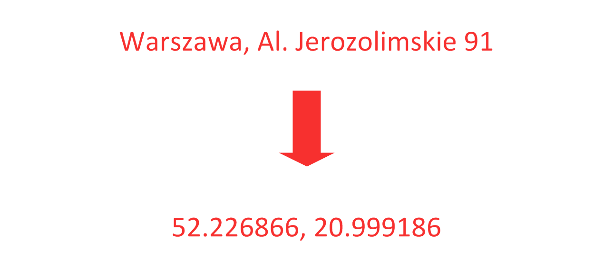
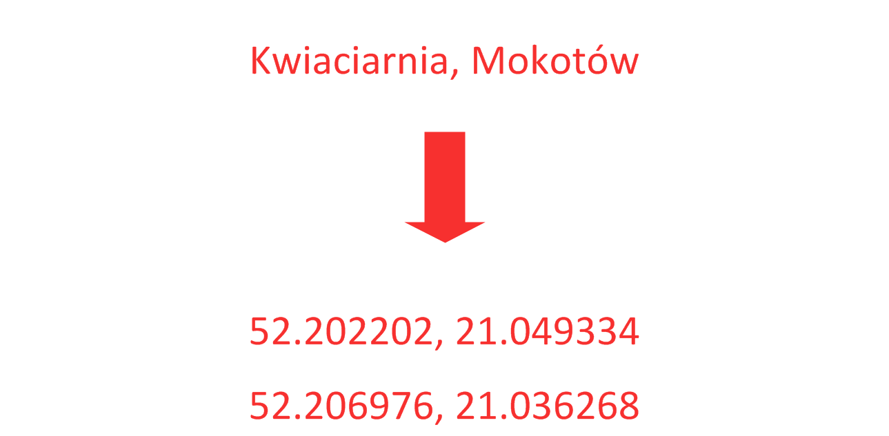
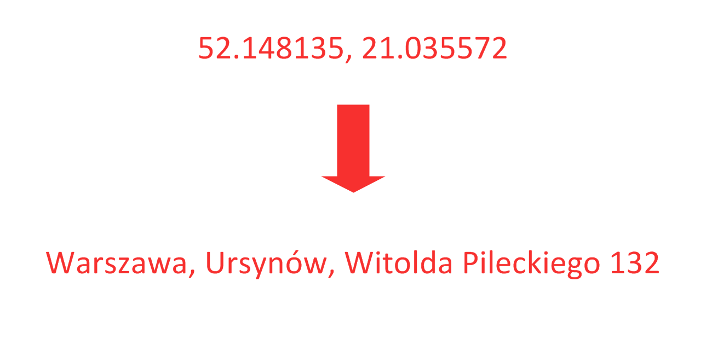

Geocoding in applications
Michał Rogala @michalrogala
Michał Rogala @michalrogala
Converting text description into GPS coordinates

Converting text description into GPS coordinates

Converting GPS location into human readable text

http://nominatim.openstreetmap.org/search?q=warszawa,jerozolimskie 91&format=json
[{
"lat":"52.226866",
"lon":"20.9991864510345"
"display_name":"91, Aleje Jerozolimskie, Kolonia Staszica, Ochota, Warszawa, województwo mazowieckie, 02-006, Polska"
}]
http://api.navidata.pl/geocode?q=warszawa,jerozolimskie 91
[{
"lat": 52.2268660010955,
"lon": 20.9991863955474,
"description": "Aleje Jerozolimskie 91, Warszawa, woj. mazowieckie"
}]
<link rel="stylesheet" href="http://cdn.leafletjs.com/leaflet-0.7.3/leaflet.css" >
<script src="http://cdn.leafletjs.com/leaflet-0.7.3/leaflet.js"></script>
<div align="center" id="map" style="width:50%" ></div>
var map = L.map('map').setView([52.2321, 21.0127], 14);L.tileLayer('http://{s}.tile.osm.org/{z}/{x}/{y}.png', {maxZoom: 18}).addTo(map);var marker = L.marker([52.2321, 21.0127]).addTo(map);
var circle = L.circle([52.2321, 21.0127], 1000, {
color: 'red',
fillColor: '#f03',
fillOpacity: 0.3
}).addTo(map);
function search() {
adres = document.getElementById("adres").value;
if ( adres.length == 0 ) { return ;}
$.getJSON("http://api.navidata.pl/geocode",
{ q : adres }, szukaj_callback);
}
function search_callback(data) {
position = L.latLng([dane[0].lat, dane[0].lon]);
company = L.latLng([52.2321, 21.0127]);
marker.setLatLng(position);
map.setView(position, 14);
distance = position.distanceTo(company);
marker.bindPopup('Distance:' + Math.round(distance) + 'm');
marker.togglePopup();
}